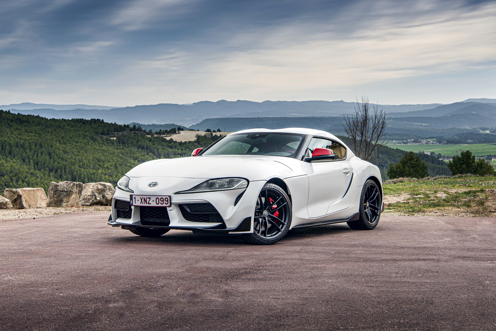
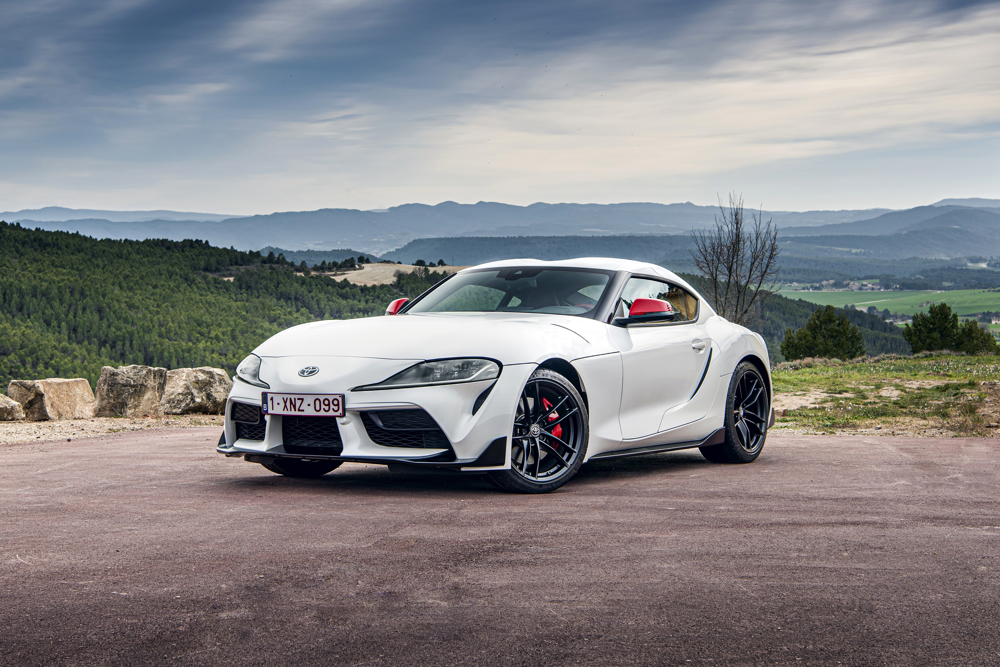

Toyota Supra FOR SALE!
White Toyota Supra: The Resurgence of a Legendary Sports Car
Overview
The White Toyota Supra is a modern revival of a legendary sports car that has captured the hearts of enthusiasts worldwide. Known for its distinctive styling and performance capabilities, the Supra combines Japanese engineering with an iconic design that remains true to its roots. The striking white exterior adds a touch of elegance and sportiness, making it a standout on the road.
Performance and Features
Under the hood, the Toyota Supra is powered by a 3.0L inline-six turbocharged engine that produces up to 382 horsepower, delivering exhilarating acceleration and responsive handling. With a 0 to 100 km/h time of just 4.1 seconds, the Supra showcases its performance pedigree. The car features an 8-speed automatic transmission that offers smooth gear shifts, while its rear-wheel-drive configuration ensures a thrilling driving experience.
Inside, the Supra offers a driver-focused cockpit, complete with premium materials and advanced technology. The infotainment system includes a large touchscreen display, Apple CarPlay, and a premium sound system, ensuring that both driver and passengers enjoy a comfortable ride. With a perfect blend of performance and luxury, the Supra caters to driving enthusiasts and everyday users alike.
Market Price
The market price for a White Toyota Supra starts at around $43,000 in the United States, with higher trims and additional options potentially raising the price. In South Africa, prices typically range from R900,000 to R1.3 million, depending on specifications and customization.
The Toyota Supra is a testament to performance, heritage, and innovation, making it a must-have for anyone seeking a thrilling driving experience in a stylish package.